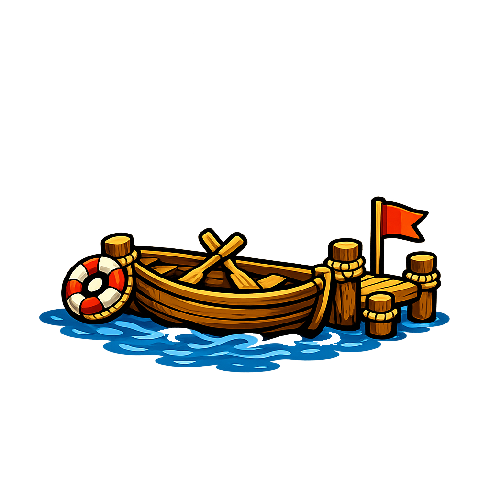

<h2 class="book-page-title" data-book-bind="technology.boating.label"></h2>
<p>

Una barca permite a los pitufos cruzar el agua en vez de rodearla, y abre el acceso a nuevas orillas y lugares de pesca.
</p>
<p>

Construir <span data-book-bind="vehicle.boat.label"></span> cuesta:
</p>
<p>

<span data-book-bind="vehicle.boat.buildCost.lumber"></span>

<span data-book-bind="vehicle.boat.buildCost.stone"></span>
</p>
